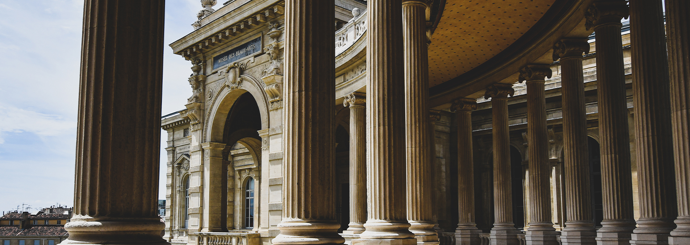

Marseille
Histoire
Activités
Plages
Parcs Publics
Musées
Randonnées
Contact
Le Mucem
Horaires/Jours d'ouvertures
lundi - vendredi
10h - 18h
La Vielle Charité
Horaires/Jours d'ouvertures
lundi - vendredi
09h - 18h
Musées Des Beaux Arts
Horaires/Jours d'ouvertures
lundi - vendredi
09h - 18h
Samedi - Dimanche
09h - 17h

Musées de L'histoire De Marseille
Horaires/Jours d'ouvertures
Mardi - Dimanche
09h - 18h
Le Musé du Savon
Horaires/Jours d'ouvertures
lundi - Dimanche
09h - 18h